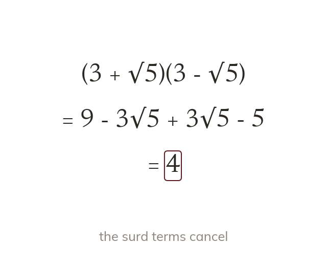
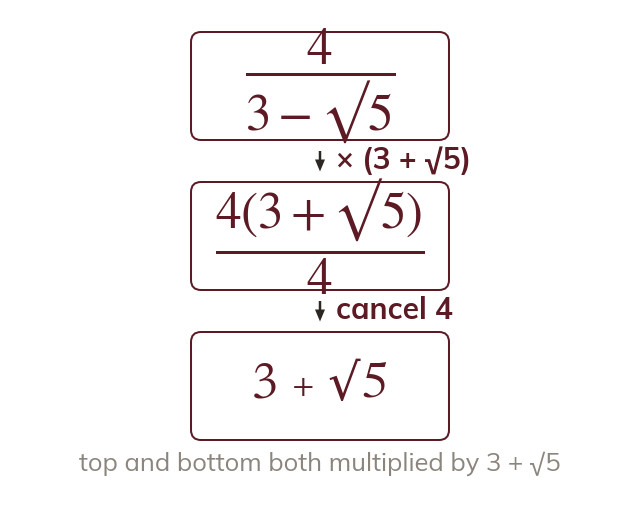
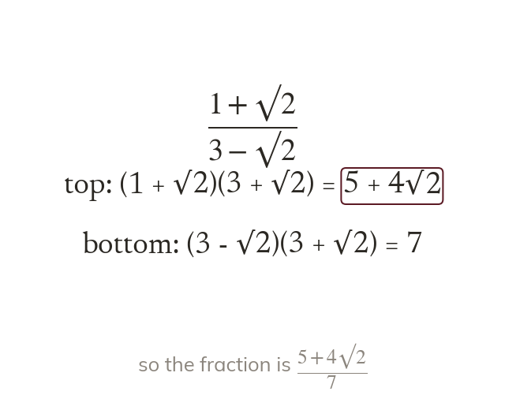
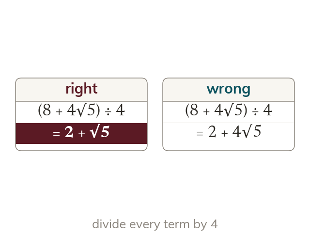

Change the sign
Multiplying a + √b by a - √b clears the surd. The middle terms cancel, leaving a² - b.
A denominator such as 3 - √5 is not cleared by multiplying by √5. Changing the sign between its terms makes the surds cancel, by the difference of two squares.
Work down the page at your own pace. Write every answer in your book first, then click to check it.
Read each card, then follow the worked examples one step at a time.

Multiplying a + √b by a - √b clears the surd. The middle terms cancel, leaving a² - b.

The numerator is multiplied by the same bracket, to keep the value. Its expansion uses every term.
Pick an answer. If it's wrong, the feedback tells you which mistake it was.
Read each card, then follow the worked examples one step at a time.

When the numerator also holds a surd, it expands like any double bracket. The denominator still becomes a whole number.

A factor cancels only if it divides every term of the numerator. So (8 + 4√5) ÷ 4 = 2 + √5.
Pick an answer. If it's wrong, the feedback tells you which mistake it was.
Finished? Next lesson: 11H.2.1 Graphs of Sin, Cos and Tan.
Log in, then search for a code to practise that skill.
Videos, worksheets and more on each part of this lesson.